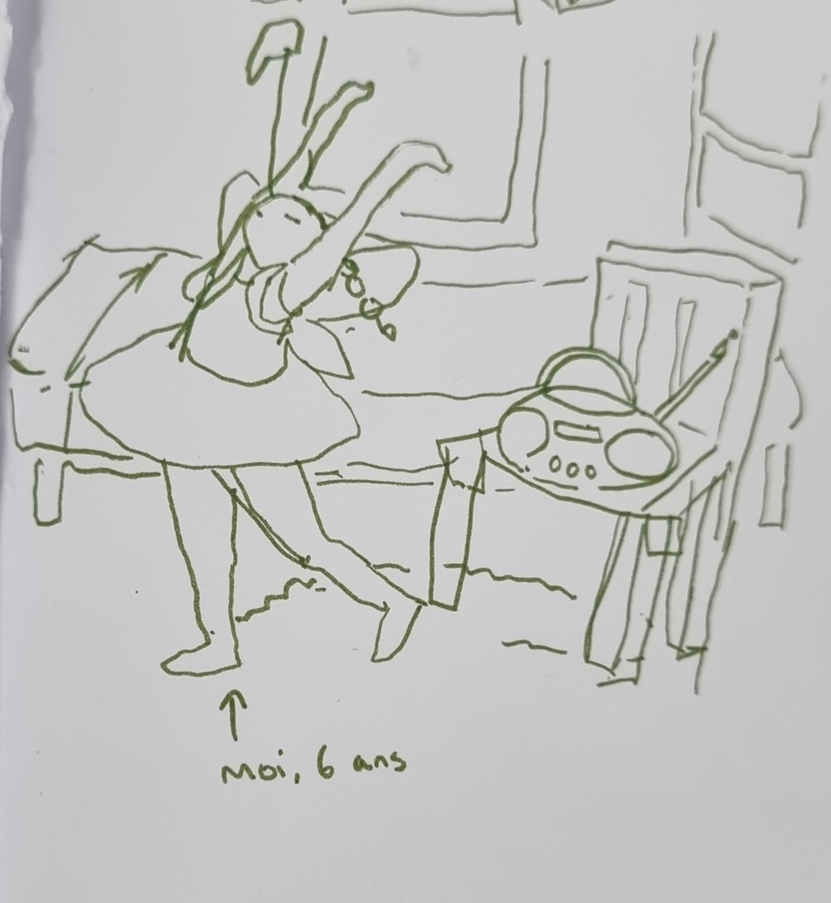

Voici une cassette audio (K7 pour les intimes). Officiellement appelé "Compact cassette", ce petit boitier en plastique contient une bande magnétique enroulée sur deux bobines avec laquelle on peut enregistrer et diffuser du son. Cette invention de Lou Ottens a été breveté et commercialisé par Philips pour la première fois en 1963. A l'origine, Ce support était surtout pensé pour l'enregistrement de voix, les autoradio et autres appareils portables. La qualité du son diffusé n'était pas assez bonne pour rivaliser avec le disque microsillon (vinyle) qui était alors le format musical le plus répandu. En plus de la transportabilité et l'enregistrement facile, deux évolutions majeures ont permis a la cassette de se hisser au rang de principal support d'écoute et d'enregistrement domestique pendant plus d'une décennie :
En 1971, la première utilisation du Dolby type B - un filtre audio analogique qui réduit les bruits "parasites"- sur les lecteur de cassettes. Cela a permis a ces machines d'être pris plus au sérieux en tant que diffuseur de musique. On commence a voir apparaitre des lecteurs cassettes Hi-Fi (High Fidelity, Haute Fidélité) qui, comme sont nom l'indique, vise a obtenir une reproduction sonore aussi fidèle a l'original que possible.
En 1979, l'invention du baladeur, qui ouvre la porte a un tout nouveau mode d'écoute individuelle, modulable et mobile. Initialement commercialisé sous le nom "Walkman", l'invention de la marque Sony profite de la hausse des ventes permise par la commercialisation de cassettes musicales préenregistrées (musicassettes) pour faire son apparition. Son succès a lui-même entraîné les ventes de cassettes à dépasser celles des disques vinyles, faisant de ce format un élément presque indissociable de l’écoute musicale dans les années 80. On peut aussi noter qu'il a contribué a "garder la cassette en vie" après l'arrivée des disques compacts car contrairement au walkman cassette, le walkman CD était trop sensible aux chocs et vibrations pour pouvoir confortablement écouter de la musique en bougeant. Pendant sa commercialisation, le walkman a lui même connu des évolution marquantes comme par exemple la réduction de la taille et du prix des ces appareil ainsi que le mode "autoreverse" permettant de lire les deux faces d'une même cassette a la suite sans avoir a la sortir du lecteur (option aussi disponible dans certain autres types de lecteurs cassette).
Comme dit précédemment, la cassette a marqué une révolution dans l'écoute domestique en offrant la possibilité d'enregistrer soit même sa musique. Les cassettes vierges étaient classée par capacité : par exemple les C60 avait une capacité d'enregistrement de 60 minutes, 30 pour chaque faces. Au fil du temps, de nouvelles sortes de cassettes et de lecteurs ont été mis au point pour améliorer la qualité du son et d'allonger la capacité d'enregistrement mais on commencé a poser un autre problème : celui de la compatibilité.
Pour la suite de mon investigation, je me suis rendue là où je savais que j’allais trouver une quantité d’indices capitaux : la maison de mes grands-parents. Durant mon enfance, j’avais déjà pris l’habitude de fouiller dans les placards, tiroirs et cartons pour trouver des objets qui m’étaient inconnus, ce qui m’a permis de repérer les recoins où se trouvaient les choses les plus intéressantes au fil des années. Mes grands-parents étaient partis en vacances et ils avaient remisé la plupart de leur matériel depuis longtemps, donc ils ne pouvaient pour l’instant pas m’aider autrement qu’en me donnant la permission de prendre tout ce que je voulais. Je n’ai toutefois pas fait mes recherches seule. Mes parents, de vrais initiés aux supports de musique physique (comme tous ceux de leur génération), m’ont servi de consultants. Grâce à eux, j’ai pu découvrir le contexte derrière chaque élément de ma collecte.
Il y avait beaucoup de choses dans tous les recoins de la maison et je suis sûre de ne pas encore avoir tout vu, mais une chose est sûre : ça prend de la place ! Apparemment, mon grand-père, grand amateur de musique, a voulu garder tout son matériel d'écoute au cours du temps et de leur évolution « au cas où quelqu’un en aurait besoin », et en effet, il avait raison de garder tout ça. Ma grand-mère était cependant plus exaltée à l’idée que je puisse lui en débarrasser. Ils ont aussi gardé toute cette musique pour des raisons sentimentales, évidemment. Elle représente en quelque sorte l’histoire musicale de leurs vies, alors dans ce sens, je comprends pourquoi on laisse cette mémoire prendre quelques étagères de la maison. Je dis ça parce que, personnellement, quand je regarde toutes les playlists Deezer que j’ai faites depuis que j’ai un compte (ça fait déjà 8 ans), ça me rappelle beaucoup de souvenirs que je ne voudrais vraiment pas perdre, même si cela pourrait arriver à tout moment. Après tout, ces fichiers ne sont pas les miens.
Les souvenirs de mes grands-parents sont « incarnés » et, en plus de leur appartenir, ils ont la capacité d’emmagasiner des informations jusqu’à leur surface, lisible à l’œil nu. Les marques du temps, les étiquettes, les dessins et les écritures racontent l’histoire du disque : ses propriétaires, son âge, son prix et peut-être même sa rareté. Je crois que le passage du temps a aussi laissé sa trace dans le son des vinyles, mais je n’en suis pas sûre, je ne les ai jamais écoutés neufs. Au cours de la fouille, j’ai rencontré un personnage nommé « Michel Belin ». Selon mes parents, c’était un ami de mon grand cousin Hervé et il était DJ. Il était aussi apparemment très généreux car une grande partie de la collection de vinyles de mon grand-père est marquée de son nom, il en était donc l’ancien propriétaire. Toujours selon mes parents, tout le monde ne se comportait pas de cette façon par rapport à sa collection personnelle. Certain·e·s refusaient même de les prêter (ce que je peux comprendre quand il s’agit de quelque chose d’aussi précieux qu’un élément de collection), mais l’arrivée de la cassette et du magnétophone a amené un compromis pour ce genre de cas : on s’invitait les un·e·s chez les autres pour enregistrer les contenus des vinyles sur des cassettes. Évidemment, cette pratique est illégale, mais il n’y avait pas encore de moyen efficace de contrer ce piratage, l’écoute et l’enregistrement étant hors ligne et donc non traçables. J’aime bien ce côté rebelle et convivial, comme si on partageait tous une grande bibliothèque avec notre entourage. Le partage se fait de main en main ou d’émetteur de son au récepteur de son. Je m’imagine bien aller chez mes ami·e·s et boire un thé pendant que j’enregistre leurs albums dans les années 80.
Enfin assez de tergiversions et parlons de ce que j’ai trouvé durant ma chasse aux trésors. J’ai, comme je l’ai dit, vu beaucoup de vinyles mais pas seulement. Heureusement pour moi, j’ai croisé pas moins de 3 lecteurs vinyles, dont un que j’ai littéralement découvert sous une couche de poussière. Je dois l’avouer, je me suis prise pour Indiana Jones pendant un instant. Je compte également de nouvelles cassettes dans mon inventaire. Certaines sont préenregistrées, 5 sont neuves, d’autres contiennent des mixtapes faites maison, mais le plus intéressant reste les cassettes provenant de l’hôpital.
Pour l’instant, je ne sais pas exactement ce qu’elles ont enregistré, quand je les mets dans un magnétophone, je n’entends qu’un bourdonnement qui alterne parfois entre aigu et grave. Honnêtement, je suis un peu déçue. Quand j’ai appris que c’étaient des « cassettes médicales », j’ai cru qu’il s’agissait d’enregistrements de battements de cœur, ce qui aurait été très fort de sens, évoquant explicitement l’essence de vie ou peut-être même la mort de ces personnes (les enregistrements ont tous été faits en 1995). Mais finalement, ça peut toujours être le cas, seulement de manière plus abstraite. D’une manière que le commun des mortels (c’est-à-dire ceux qui, contrairement à mes grands-parents, ne travaillaient pas dans un hôpital) ne pourrait pas interpréter sans explications. On ne peut même pas dire que je n’aie du tout d’explications : sur chaque cassette est inscrit un nom et un prénom, une date de naissance, une date en 1995 et parfois l’heure à laquelle quelque chose aurait été « posé ». Mystérieux hein ? Pour en savoir plus, il faut que j’appelle mon grand-père. Tout ce que je sais, c’est qu’il les ramenait chez lui pour réenregistrer des chansons dessus. Il y en a environ une trentaine.
Enfin, je rapporte un dernier souvenir de mon expédition : le premier walkman de mon grand-père. Cette machine nous a donné du fil, ou plutôt de la bande à retordre, haha. Pour tenter de le réveiller de son long coma, nous avons cherché des piles un peu partout. Une fois l’engin allumé, il a beaucoup peiné à tourner, même après que ma mère l’a aspergé de lubrifiant pour les chaînes de vélo (peut-être que ce n’était pas une bonne idée finalement). La musique qu’il jouait était distordue, d’un coup ralentie puis accélérée, c’était assez drôle. Puis elle s’est finalement stabilisée pour donner un son tout à fait correct pendant quelques minutes avant de se dérégler à nouveau. J’aimerais essayer de le réparer, mais il faudrait que quelqu’un qui s’y connaisse vraiment en électronique m’aide un peu pour m’éviter de casser le walkman pour de bon. J’ai déjà quelqu’un en tête et je vais lui demander bientôt.
Voilà encore quelque chose d’inédit dans ces recherches (par rapport à celles que j’ai faites avant) : je peux acquérir énormément d’informations seulement en discutant avec mon entourage. Je me suis rendu compte que les souvenirs liés aux médias physiques tels que les vinyles et les cassettes sont de très bons lanceurs de conversation, surtout pour ceux qui en ont fait l’expérience sur le long terme. Étant une partie intégrante de leur quotidien (presque comme Deezer l’est pour moi aujourd’hui), ces objets sont directement liés à des souvenirs parfois assez lointains de leur vie et souvent, quand j’en parle autour de moi, les gens me racontent leurs anecdotes le sourire aux lèvres et me donnent des informations précieuses sur les pratiques liées à l’écoute avant l’avènement du format numérique. J’en apprends plus sur mon projet mais aussi sur les gens qui m’en parlent, j’aime beaucoup ça. Cela me permet de me distancer aussi d’Internet pour une fois.
J'ai aussi remarqué que je percevais des indices sur le fonctionnement de la machine rien qu'en la faisant fonctionner, contrairement à mes expériences avec mes supports musicaux actuels (téléphone portable, PC portable). Aujourd'hui, les machines avec lesquelles nous consommons du divertissement ne communiquent qu'intentionnellement ou presque. Mis à part la surchauffe et le bruit de ventilation de certains appareils, les seuls signaux qui nous sont donnés font partie de leurs fonctionnalités « officielles » : lumière, son, vibration. Or les supports physiques, surtout analogiques, de par leur fonctionnement en rotation et parfois leurs boutons mécaniques, nous donnent différentes données. Le vieux walkman, par exemple, m'indiquait déjà que les piles fonctionnaient avant même que je branche mon casque. Sans écran ni lumière, je le savais. En appuyant sur le bouton « Play » dont je connaissais déjà bien le signe, je sentis la vibration du moteur qui se réveillait, et par la même occasion, je vis, par la petite fenêtre, que les bobines tournaient très bizarrement. Pareil pour la résistance des boutons : quand j'appuie sur « rembobiner » alors que la cassette est en train de tourner, je sens que je « fais » mal à la machine en constatant la résistance du bouton. Je pense que cela change beaucoup mon rapport avec elle. Le fait de ressentir son fonctionnement et de mieux le comprendre me pousse à avoir un rapport plus empathique avec ce curieux outil
Cet été, j’ai passé beaucoup de temps dans une médiathèque pour un stage. Le fait d’être en permanence entourée de culture m’a beaucoup inspirée, surtout à l'étage cinéma et musique, là où j’ai passé la majorité de mon temps. Ce que l’on remarque en premier en arrivant là-bas, ce sont les immenses collections de médias physiques : CD, DVD et vinyles. Ces supports sont aujourd’hui de moins en moins utilisés, mais restent ici particulièrement mis en valeur. Malgré cela, ils demeurent relativement impopulaires et les foyers possédant encore des lecteurs CD, DVD ou vinyles se font de plus en plus rares. Pourtant, leur présence se fait toujours sentir, dans certains magasins, des bibliothèques — à usage domestique (celles que je connais appartiennent surtout à des personnes âgées) ou publiques — dans des décors à l'ambiance vintage. On les voit aussi beaucoup dans des films et séries, où leurs caractéristiques peuvent être exploitées à des fins scénaristiques, intentionnellement ou non. Je me rends compte qu'aujourd'hui, j’"interagis" avec des disques et cassettes surtout par procuration. Ils restent toujours gravés dans les souvenirs et réellement ancrés dans l'histoire de la musique et de bien d'autres domaines. Pourtant, en quelques années seulement, leur existence est passée d'omniprésente à presque fantomatique. Ça m'amène à m’interroger sur l’utilité de ces collections : pourquoi les conserver, les utiliser ? Tombent-elles réellement dans l’obsolescence ?
Pour pouvoir au mieux étudier les supports de médias physiques, il faut évidemment que j'en fasse moi-même l'expérience. Bien entendu, étant née en 2003, j'ai déjà pu en croiser certains avant même de penser à les investiguer : dans mon enfance, les CD, les DVD et les clés USB étaient mon seul moyen de regarder les films et d’écouter la musique que je voulais, quand je le voulais, jusqu'à ce que j'aie un accès libre à Internet. À cette époque, j'écoutais ma musique sur un lecteur CD rouge puis sur une chaîne hi-fi CD. Dans mon esprit, ces objets sont inévitablement associés aux foyers qui les abritaient, ceux dans lesquels j'ai grandi. Je ne peux pas penser à mon lecteur rouge sans penser à ma première chambre d'enfance et à la chaise colorée sur laquelle je le posais. Je me revois encore recevoir pour mes 8 ou 9 ans ma PREMIÈRE CHAÎNE HI-FI dans le jardin de mon grand-père, je revois aussi l'endroit où je l'ai installée dans ma chambre. Mon principal outil était une clé USB rouge qui s'allume quand on la branche. Au fil du temps, plusieurs membres de ma famille y ont ajouté leur musique, et cela représente un peu la base de mon éveil musical. J'avais aussi des albums fétiches, le plus marquant étant 21 d’Adèle, que je mettais tous les soirs sur ma chaîne hi-fi pour m'endormir. 
Pour commencer mes recherches, j'ai choisi de m'intéresser aux cassettes. Parmi les principaux supports physiques musicaux, c'était celui qui m'intriguait le plus. Pas vraiment parce que son fonctionnement me paraissait mystérieux, mais plutôt parce que j'ai énormément entendu parler de souvenirs liés à ce support mais je n'en avais jamais utilisé. Le monde des mixtapes faites maison, du rembobinage, des loops et autres curiosités m'appelait depuis longtemps. J'ai donc fait des recherches sur le sujet et demandé à ma mère de me ramener ses cassettes et autres supports, lecteurs et enregistreurs. J'ai un peu galéré en mettant ma première cassette dans un poste (je l'ai mise à l'envers et essayé pendant bien 5 minutes…) mais la joie et le soulagement que j'ai ressentis en voyant les bobines tourner en valaient la peine. J'ai joué un peu avec les réglages mais je ne pense pas maîtriser cet outil pour le moment.
Écouter ces cassettes m'a un peu émue : elles appartenaient toutes à ma mère ou à des membres de ma famille et ces objets plutôt intimes me faisaient beaucoup penser à eux. C'était particulièrement étrange quand j'ai trouvé une cassette appartenant à ma grand-mère, qui est décédée et que je n'ai jamais connue. Je n'ai jamais vu de vidéos d'elle ou entendu sa voix. Je ne la connais qu'à travers des histoires et des objets qui lui ont appartenu ou qu’elle a fabriqués ; le format cassette était cependant inédit. Il y avait des écritures dessus, probablement les siennes, qui listaient les titres enregistrés dessus. Le son était de mauvaise qualité et les chansons avaient un style bien particulier que je n'avais jamais entendu auparavant. Je ne saurais pas vraiment décrire ce que j'ai ressenti en manipulant et en écoutant cette cassette. Le fait est que j'ai beaucoup ressenti juste en écoutant de la musique.